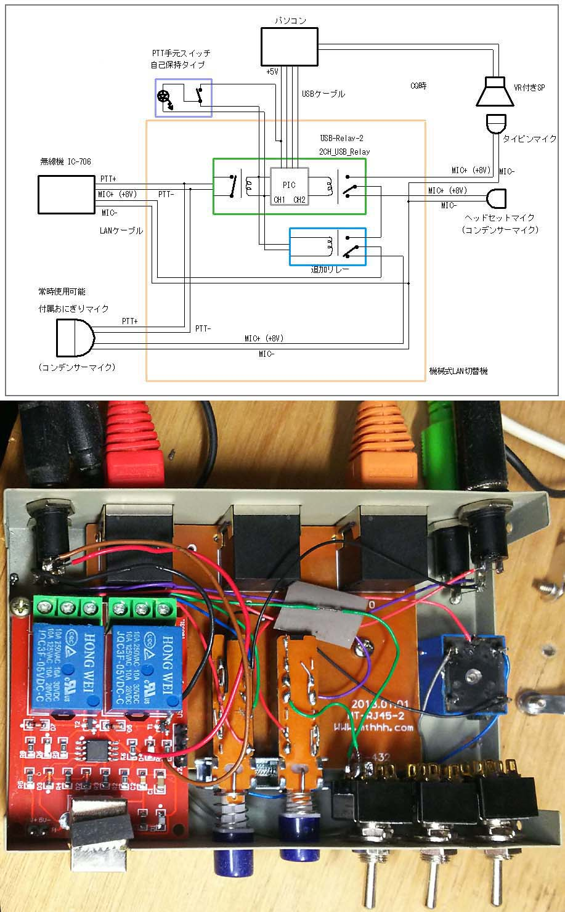

USBリレーでCQマシン
USBリレーでCQマシンを作ってみた。
マイクの切り替えと送信をUSBリレーを使い、パソコンから制御する。
USBリレーには、いろいろ種類がある。
その中で、基板に、USB-Relay-2、USB-Relay-1とシルク印刷されているタイプを使用
大陸から通販で300-500円位で入手できる。
このタイプは usb_relay_device.dll を使用してプログラムできる。
ｇithubの JanOosting/delphi-keyes-relay に使い方のソースがある。
CQマシンとして使うので、
無線機付属のおにぎりマイク、ヘッドセットマイク、タイピンマイクを切り替える。
CQ音声はウェーブファイルをパソコンのスピーカーで鳴らし、スピーカーにタイピンマイクを近くに置いておく。
音量はスピーカーについているボリュームで調整。
送信時間はウェーブファイルの中に平均バイト数/秒であるのでこれにより算出する。
USBリレーは2チャンネルの物を使い、CH1は送信、CH2はマイク切り替えに使用。
CQ時でなく、交信のための送信はマウスのミドルボタンでやってみたが、いまいちだったので
別にスイッチをつけた。
自己保持付きで、LEDが付いているプッシュボタンスイッチをAliExpressで見つけたので購入。
USBリレーCH1にスイッチを接続、LEDは送信時に5Vになる部分に接続。いい感じになった。
制御はソフトウェア上でする。
